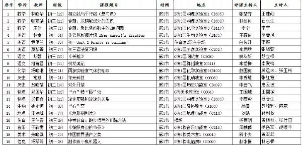
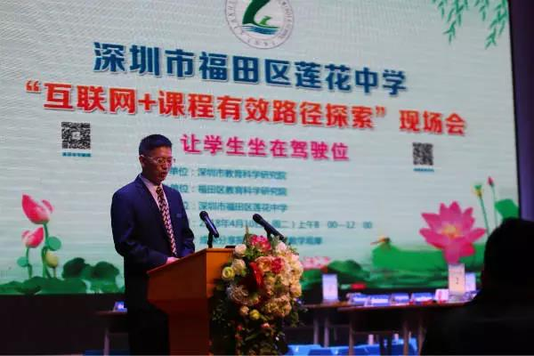
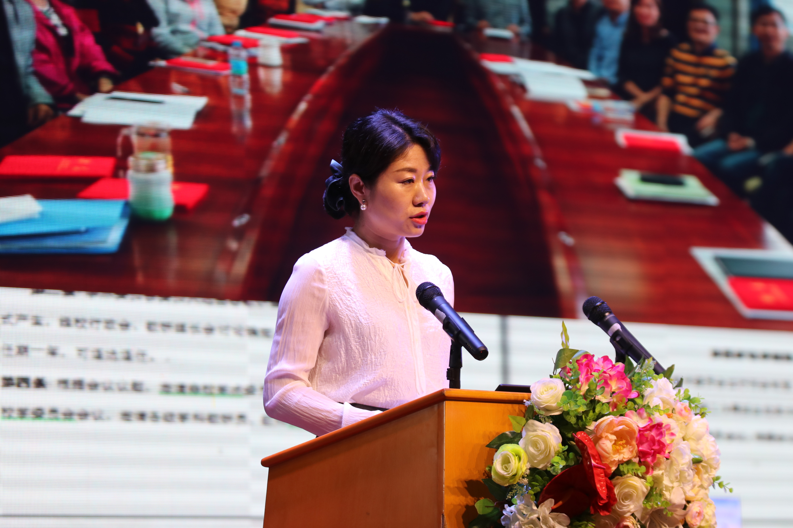
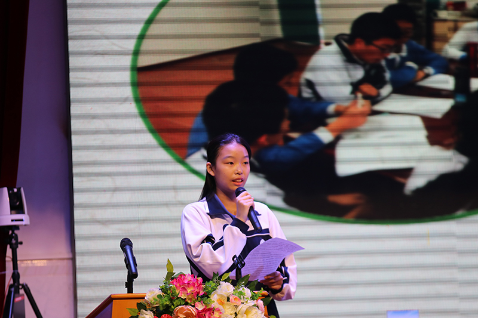
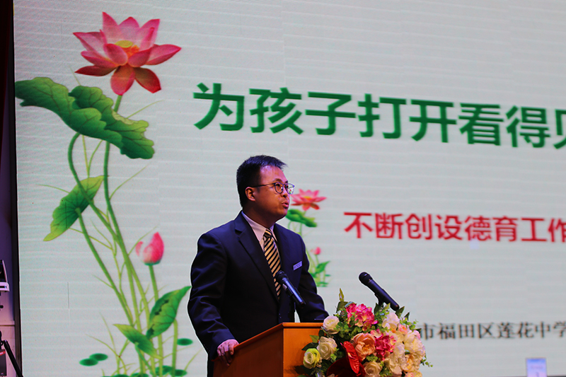

4月10日上午，深圳市教育局“互联网+课程有效路径探索”现场会在我校隆重举行。
为贯彻落实《关于全面深化中小学课程改革的指导意见》和《深圳市教育事业发展“十三五”规划》有关要求,探索未来教育教学新模式，积极推动“课堂革命”，在最大程度上提高学生学习的趣味性、多样性和时效性，培育、引导和激发学生内心的学习需要，促使他们逐渐学会主动性学习。同时为更好地促进家校沟通和校际交流，推动学校教育教学质量的不断提升，4月10日上午，由市教育局教育科学研究院主办，福田区教育局协办的“互联网+课程有效路径探索”现场会在我校隆重举办了系列活动，面向全市开放。
福田区教科院郭其俊院长主持现场会
市委教育工委范坤副书记
福田区教育局田洪明局长
出席现场会的领导、专家有：深圳市委教育工委副书记范坤，福田区教育局局长田洪明，广东省教育厅基础教育与信息化处副处长带领的珠江三角洲各市区教研室与大学专家考察团队20余人，深圳市教科院副院长李桂娟，福田区区华富街道办副书记赵晓轩、区政府教育督导室副主任赖运添等领导和深圳市、福田区两级教科院所有学科教研员专家学者，各初中学校校长、主任、骨干教师，莲花中学在校学生家长以及周边小学六年级学生家长近2000人参加了现场会。
整个现场会分三个环节：主题汇报、“互联网+课程”课堂观摩、评课与交流。福田区教科院郭其俊院长主持了现场会主题汇报，徐连佳校长在大会上将“为师生发展搭建不设边界的平台”的办学追求、“让学生坐在驾驶位置上”的教学倡导、“个性化激励”的评价措施向各位作了介绍，马翔中主任、诸葛香芸同学、胡博主任分别就学校课程体系、莲中学子的体会、学校德育体系向大会做了汇报。福田区教育局田洪明局长对莲花中学的教师团队、办学业绩给予了充分肯定，他说，莲花中学是福田区、深圳市的传统名校，徐连佳校长引领全校开展“互联网+课程有效路径探索”的尝试值得学习。

市委教育工委范坤副书记在充分肯定莲花中学办学业绩、大胆进行现代教育探索的基础上，希望莲花中学继续抓好立德树人，走在深圳教育前沿。大会后莲花中学开放了全校所有课堂，并重点推荐了19节公开课供与会嘉宾观摩，观课的各位教育届领导和专家对莲花中学的学校管理、教师业务水平、教学能力以及学生综合素质给予了高度评价，赞不绝口。

王兴副校长

教学处马翔中主任

初三学生诸葛香芸

德育处胡博主任
整个现场会三个半小时顺利完成，学校各部门通力合作，学校家委会、家长义工、社区派出所积极参与其中，充分展示了莲花中学良好的校风校貌。